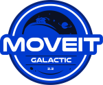

Foxy
Getting Started
MoveIt Quickstart in RViz
Move Group C++ Interface
Move Group Python Interface
MoveIt Commander Scripting
Robot Model and Robot State
Planning Scene
Planning Scene Monitor
Planning Scene ROS API
Motion Planning API
Motion Planning Pipeline
Creating MoveIt Plugins
Visualizing Collisions
Time Parameterization
Planning with Approximated Constraint Manifolds
Pick and Place
MoveIt Grasps
MoveIt Task Constructor
MoveIt Deep Grasps
Subframes
MoveItCpp Tutorial
Using Bullet for Collision Checking
Planning For Differential-Drive Mobile Base and an Arm
MoveIt Setup Assistant
URDF and SRDF
Low Level Controllers
Perception Pipeline Tutorial
Hand-Eye Calibration
IKFast Kinematics Solver
TRAC-IK Kinematics Solver
Kinematics Configuration
Custom Constraint Samplers
OMPL Planner
CHOMP Planner
STOMP Planner
TrajOpt Planner
Pilz Industrial Motion Planner
Sequence of multiple segments
Planning Adapter Tutorials
Warehouse - Persistent Scenes and States
Realtime Arm Servoing
Benchmarking
Integration/Unit Tests
MoveIt Documentation: Galactic
»
Search
Please activate JavaScript to enable the search functionality.
Other Versions
v: galactic
MoveIt 2 - Rolling (Development)
Main (latest)
MoveIt 2 - Stable
Galactic (recommended)
Foxy
MoveIt 1 - Stable
Noetic
Melodic